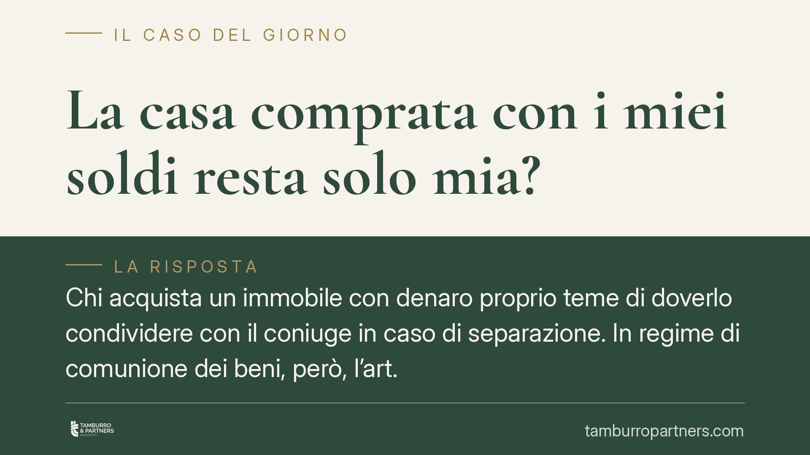

La casa comprata con i miei soldi resta solo mia?
Chi acquista un immobile con denaro proprio teme di doverlo condividere con il coniuge in caso di separazione. In regime di comunione dei beni, però, l'art. 179 del Codice civile prevede eccezioni precise. Capire quando un bene resta personale è decisivo per proteggere il proprio patrimonio: la differenza la fa la prova documentale della provenienza del denaro.

Il punto di partenza: comunione non significa tutto in comune
Molti presumono che, sposandosi in comunione dei beni, ogni acquisto successivo diventi automaticamente di entrambi. Non è così. La comunione legale riguarda gli acquisti compiuti durante il matrimonio, ma il Codice civile elenca categorie di beni che restano esclusivi del singolo coniuge, anche se acquistati dopo le nozze.
La distinzione è tutt'altro che teorica: incide sulla divisione del patrimonio in caso di separazione, sull'eredità e sulla responsabilità verso i creditori.
Inquadramento normativo
La norma di riferimento è l'art. 179 del Codice civile, che individua i cosiddetti "beni personali", esclusi dalla comunione legale. Rientrano in questa categoria:
- i beni posseduti prima del matrimonio;
- i beni ricevuti per donazione o successione (quindi eredità e regali formali), salvo diversa indicazione dell'atto;
- i beni acquistati con il prezzo del trasferimento o dello scambio di altri beni personali, purché ciò risulti espressamente dall'atto di acquisto.
Quest'ultimo punto è quello più delicato. La lettera f) dell'art. 179 richiede che, quando si compra un immobile reimpiegando denaro personale (ad esempio i risparmi accumulati prima del matrimonio o una somma ereditata), tale provenienza sia dichiarata nell'atto di acquisto.
La Corte di Cassazione ha chiarito i contorni di questo meccanismo. Con la sentenza n. 21494/2014 ha ribadito che, per gli immobili, non basta provare l'origine personale del denaro: occorre anche che l'altro coniuge partecipi all'atto e confermi la natura personale dell'acquisto (co-partecipazione dichiarativa). Con la sentenza n. 10855/2010, la Cassazione ha invece precisato la distinzione tra beni per loro natura personali e beni che diventano tali solo grazie alla dichiarazione nell'atto.
Cosa significa in concreto
La situazione cambia radicalmente a seconda di come è avvenuto l'acquisto.
Immobile comprato prima del matrimonio. Resta personale senza alcuna formalità aggiuntiva. La data dell'atto è successiva o anteriore alle nozze: è questo il criterio decisivo.
Immobile ricevuto in eredità o donazione. Anche qui il bene è personale per legge, indipendentemente dal regime patrimoniale. L'atto di provenienza (testamento, dichiarazione di successione, atto di donazione) ne è la prova.
Immobile comprato durante il matrimonio con denaro proprio. È il caso più insidioso. Se nell'atto non si dichiara la provenienza personale del denaro e non c'è la partecipazione dell'altro coniuge, l'immobile rischia di cadere in comunione, anche se pagato interamente con risorse esclusive. La sola prova bancaria del bonifico, successiva all'acquisto, spesso non basta a superare la presunzione di comunione.
In caso di separazione, questa differenza può valere la titolarità di metà immobile.
Cosa fare in concreto
- Verifica il tuo regime patrimoniale. Controlla l'atto di matrimonio o chiedi un estratto al Comune: comunione e separazione dei beni producono effetti opposti.
- Documenta la provenienza del denaro prima di acquistare. Conserva estratti conto, atti di successione, contratti di vendita di beni personali che dimostrino l'origine delle somme.
- Inserisci la dichiarazione nell'atto di acquisto. Se compri con denaro personale durante il matrimonio, pretendi che il notaio inserisca la clausola di reimpiego ex art. 179 c.c. e fai partecipare il coniuge alla dichiarazione.
- Non rimandare la regolarizzazione. Le dichiarazioni successive all'atto hanno efficacia limitata: la Cassazione è restrittiva sulle sanatorie postume.
- Fatti assistere per operazioni rilevanti. Un confronto preventivo con un legale e con il notaio evita contenziosi futuri sulla titolarità.
La protezione del patrimonio personale non si improvvisa: si costruisce con documentazione ordinata e con le giuste formalità al momento dell'acquisto. Consigliamo di affrontare questi passaggi prima di firmare, non dopo.
Disclaimer
Contributo informativo a cura di Tamburro & Partners - Avv. Giuseppe Tamburro. Non costituisce parere legale.
Ogni famiglia ha il suo equilibrio.
Separazione, divorzio, affidamento, assegno: se vuoi un confronto riservato su una specifica situazione, scrivi allo studio. Ti rispondiamo entro un giorno lavorativo.